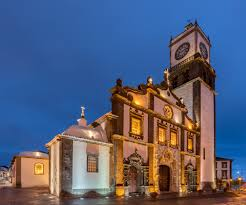

Ponta Delgada é a maior cidade dos Açores e capital administrativa da Região Autónoma dos Açores desde 1832. Localiza-se na ilha de São Miguel e começou como uma pequena vila de pescadores no século XV.
Com o terramoto de 1522 que destruiu Vila Franca do Campo (então capital), Ponta Delgada ganhou importância e tornou-se cidade em 1546. A sua localização estratégica no Atlântico contribuiu para o crescimento económico, com destaque para a agricultura, comércio marítimo e exportação de citrinos no século XIX.
Durante os séculos XIX e XX, Ponta Delgada tornou-se um centro político, cultural e económico dos Açores, com importantes infraestruturas portuárias, administrativas e educativas. Hoje é um destino turístico e urbano moderno, preservando o seu património histórico.
O centro histórico de Ponta Delgada tem mais de 500 anos de história.
A Igreja Matriz de São Sebastião é uma das mais emblemáticas e foi construída em 1533.

Já foi uma paragem estratégica para navios que cruzavam o Atlântico nos séculos passados.
Todos os anos, recebe as Festas do Senhor Santo Cristo dos Milagres, uma das maiores celebrações religiosas de Portugal.
Está perto de várias lagoas vulcânicas, como a Lagoa das Sete Cidades — uma das 7 Maravilhas Naturais de Portugal.

O Aeroporto João Paulo II liga diretamente a cidade a várias capitais europeias.